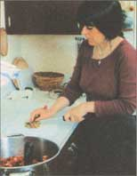

(clockwise from top left) Take care to leave the appropriate ""head room"", and clean the jar rim again before sealing... Deanna secures snap lids with screwbands... and uses a jar lifter to place jars of rhubarb in hot water.